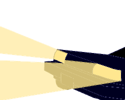

<div class="sad-header">
  <!--audio hidden muted>
    <source src="../../../assets/sensationanddesire.mp3" type="audio/mpeg">
  </audio-->
  <span>
    <span class="sad-moontide">MOONTIDE</span> <span class="sad-crossbridge">CROSSBRIDGE</span> <span class="sad-revelry">REVELRY</span>
  </span>
  <span *ngIf="sadNode" class="sad-select">
    <select #sadSelect (change)="updateSadNode(+sadSelect.value)">
      <option *ngFor="let sad of sads"
        [value]="sad.id"
        [selected]="sadNode?.id === sad.id">
        {{sad.id + 1}}: {{sad.title}}
      </option>
    </select>
  </span>
</div>
<div class="sad-page">
  <div class="sad-navigation" style="width: 150px">
    <div style="position: fixed; top: 130px">
      
    </div>
    <div style="position: fixed; top: 200px">
      
    </div>
  </div>
  <div class="sad-content">
    <div *ngIf="sadNode" class="sad-content-full">{{sadNode.contentFull}}</div>
  </div>
  <div class="sad-navigation" style="width: 150px">
    <div style="position: fixed; top: 130px">
      
    </div>
    <div style="position: fixed; top: 200px">
      
    </div>
  </div>
  <div class="sad-background left">
    
  </div>
  <div class="sad-background right">
    
  </div>
</div>